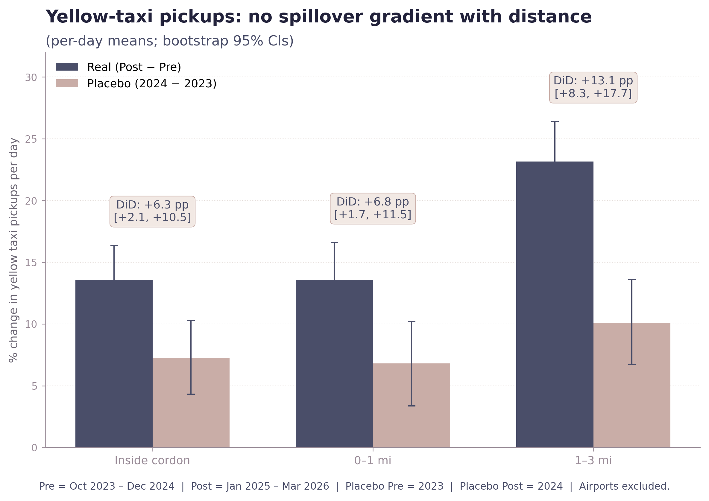
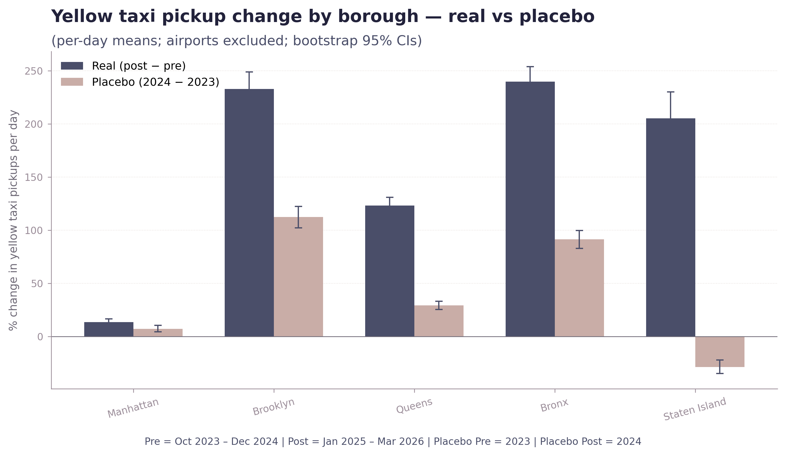

The side effect that didn't happen.

The most concrete pre-policy fear was simple. Drivers facing a $9 toll would park outside the cordon and grab a yellow cab in. That predicts a spatial gradient: strong taxi growth at the edge, weaker farther out. So I grouped the 263 NYC taxi zones into bands by distance from the cordon and ran the same real-vs-placebo DiD on each.
Inner bands are flat against each other (+6.4 inside, +6.7 at 0–1 mi, +13.1 at 1–3 mi). The 1–3 mi band is higher, not lower, than the cordon edge — opposite of the gradient prediction. Past 3 miles the DiD numbers explode (+93 pp, +117 pp), but those bands are dominated by airports and outer-borough zones with tiny pre-toll baselines. Long-running yellow-fleet clawback against rideshare, not a cordon edge effect.
Inner bands vs the full distance range.
The substitution hypothesis predicted concentration at the edge. The data shows the opposite: inner bands are essentially flat, and the dramatic outer-band growth is unrelated to the cordon.


The null is the finding.
I'll be careful with this — nulls are easy to over- and under-claim. What the data does say: the modal substitution hypothesis predicted a particular spatial pattern. That pattern is not present. What the data does not say: "no one switched to a taxi." Some people clearly did. The point is the geographic signal the substitution hypothesis required isn't there.
The big one: yellow-taxi data does not include Uber and Lyft. FHV trip records weren't available at zone resolution within this analysis's timeframe, and FHV is now substantially larger than yellow taxi by trip volume in NYC. The "spillover not detected" finding is specific to yellow taxis. If displaced commuters substituted onto rideshare in a cordon-edge pattern, this analysis can't see it. Two reasons not to over-worry: both modes compete for similar dispatch, so yellow should have caught a fraction of any such effect (and didn't); and the bus DiD in Chapter 02 is exactly where you'd expect substitution to land if drivers were giving up the door-to-door private trip — and it's strong. Full caveats →